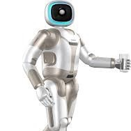
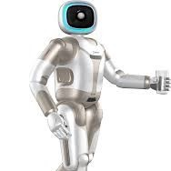

We need to know what the resources of the moon are. We have great evidence now because of different kinds of radar and spectroscopic analysis that people have been able to do. But we really do need to go visit there, and we can do that with a robot craft without any problem.
Robots Are
The Future
Robots: revolutionizing industries, homes, and daily life,
with advanced automation and AI driving us into a transformative future.